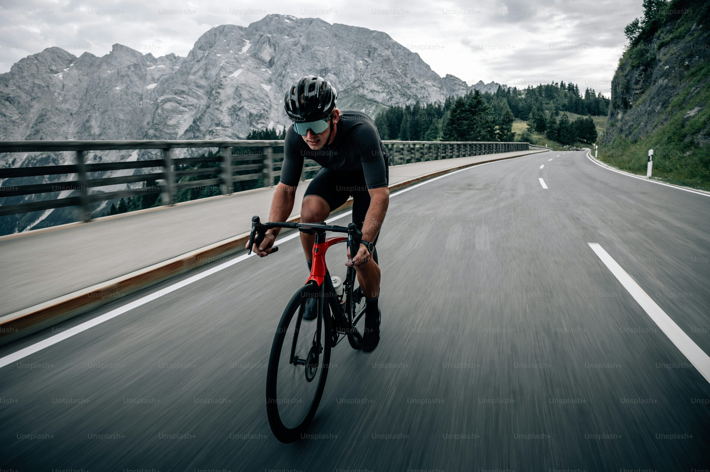

This is a website I have made to showcase all the websites I have made as part of my assignment I. I have decided to go with a light theme on this website/
Blog
Cycling as a Passion
 Cyclist enjoying his ride
Cycling is more than a mode of transportation or a weekend activity; it’s a deeply fulfilling passion that invigorates the body and mind. The rhythmic motion of pedaling, the rush of wind against your face, and the sense of freedom on the open road create an exhilarating experience unmatched by other pursuits.
For many, cycling is a way to escape the noise of everyday life. It allows you to connect with nature, explore new trails, and savor the beauty of the outdoors. The joy of discovering hidden paths or conquering challenging climbs fosters a sense of accomplishment that fuels motivation.
Cycling also brings significant health benefits. It improves cardiovascular fitness, strengthens muscles, and boosts mental health by reducing stress and anxiety. The physical demands of cycling make it an ideal activity for building endurance and resilience, both on and off the bike.
Beyond fitness, cycling builds community. Whether it’s group rides with friends, charity events, or competitive races, cycling brings people together with shared goals and camaraderie. It’s a passion that transcends age and background, uniting enthusiasts through a mutual love of the sport.
For those who embrace it, cycling is not just a hobby; it’s a journey of self-discovery, adventure, and boundless joy.
Photos
Videos
This video will help you understand how to host a website on github